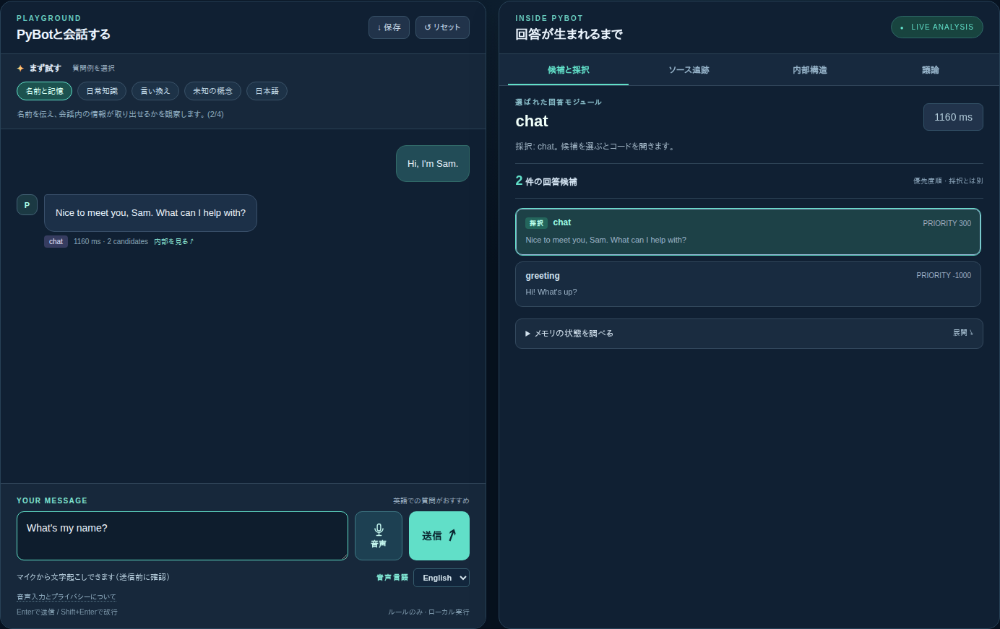
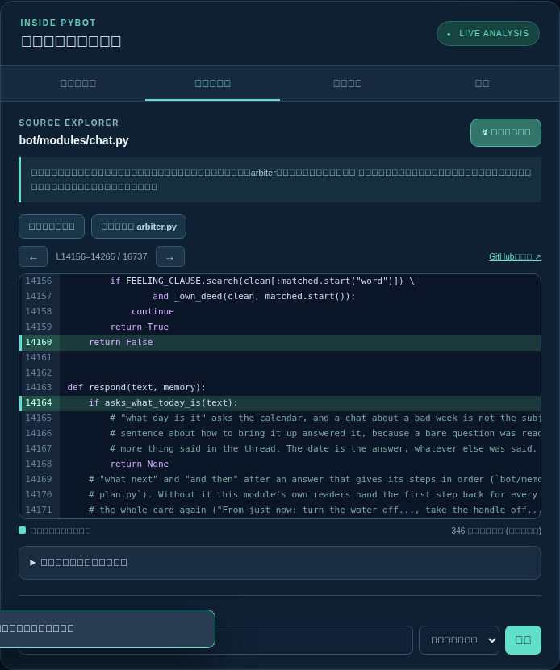

01DOWNLOAD
アプリを取得
pybotDemoリポジトリから Code → Download ZIP。展開したフォルダを開きます。
2026年11月、Hugging Faceが公開したPyBot。
重みを使わず、Pythonのルールだけで会話する実験を読み解きます。
ORIGINAL ≠ LIVE LAB このアプリはPyBotの作者・公式配布物ではありません。元のPyBot（Apache-2.0）を「知る・試す」ための独立した学習ツールです。
モデルのダウンロードもGPUも不要。最初の一度だけ、元のPyBotの公開ソースを取得します。
pybotDemoリポジトリから Code → Download ZIP。展開したフォルダを開きます。
Macは start_mac.command、Windowsは start_windows.bat をダブルクリック。
アプリがブラウザで開きます。「名前と記憶」のシナリオを選んで送信すれば準備完了。
python3 launch.py でも起動可能です。py -3 launch.py でも起動できます。.runtime/pybot に保存され、通常2回目以降は再取得しません。PyBot自体の会話処理には外部LLM APIを使用しません。まず左側で話しかけ、次に右側で採択された候補とコードを見る。表示は右上の「ライトへ／ダークへ」で切り替えられ、初回はOS設定に合わせます。

質問するとPyBotが返信。応答時間と採択モジュールが表示されます。
複数のルールが作った回答候補と優先度を表示。採択されたものを識別できます。
対応するPythonの実コードへ移動。実行行の追跡と検索も行えます。
会場から思いついた疑問を、マイクから文字に変換。送信する前にテキストを確認・修正できます。
入力欄の「音声」を押し、マイクへのアクセスを許可します。
音声言語を選択し、質問を話します。文字起こしが入力欄に表示されます。
結果を編集して「送信」。音声認識終了だけではPyBotに質問を送信しません。
プライバシーと対応ブラウザ
文字起こしにはブラウザ標準のSpeechRecognitionを使用します。音声がブラウザ提供元のサービスに送られる場合があるため、完全オフラインの音声認識とは保証できません。PyBot本体は音声データを受け取らず、認識後の文字だけを扱います。非対応ブラウザではMacの音声入力、Windowsの Win+H を使えます。
質問を少し変えたとき、採択候補と内部のルールはどう変わるでしょうか。以下の3つが入口です。
Hi, I'm Sam.What's my name?Actually, my name is Alex.何を「記憶」して、何を文字列として扱うのか。メモリの変化と採択候補を照らし合わせます。
How long should I boil an egg?What's the best way to cook eggs in water?候補モジュールの重なりが変わったら、なぜか。LLMの汎化能力と比較する際の起点になります。
Explain Quantum Banana Regression.こんにちは、名前を覚えられますか？架空の概念や言語の違いに対し、ルールはどこまで対応できるでしょうか。
候補をクリックすると実際のPythonファイルを表示。「実行行を追跡」でルールが通った箇所を調べます。

元の質問で生成された候補・採択モジュール・優先度・応答時間。
固定seedで会話を別途再実行した時の通過行と関数呼び出し。元の応答と一致したかも表示します。
通過行は「その行が回答を決めた証明」ではありません。採択理由は前後の条件と候補を読んで検証してください。
教える側が一方的に説明するより、目の前の挙動から仮説を立ててコードで確かめる流れにします。
内部構造をざっと見て、会話に見える理由を予想する。
音声で質問を集め、名前・言い換え・未知語で反応を比べる。
採択・非採択候補、優先度、記憶、arbiterを調べる。
汎化、説明可能性、保守、計算資源、ハイブリッドを考える。
「同じ質問を違う言葉で言うと、どうなる？」「覚えているように見えるのはどこに保存しているから？」
「規則競合時のルーティング設計は？」「テスト分布の外へ一般化するか？」「シンボリック表現と分布的表現はどう補完し合う？」
Python.org版Pythonで初回の `CERTIFICATE_VERIFY_FAILED` が起こる場合があります。Live Labはこの場合だけ、macOS標準のcurlを使って証明書を検証したまま安全に再試行します。解消しないときはFinderの「アプリケーション → Python 3.13 → Install Certificates.command」を実行し、改めて起動してください。Pythonのバージョンが異なる場合は対応するフォルダを選びます。証明書の検証を無効化する方法は使わないでください。
アプリ右上の「ライトへ」「ダークへ」を押します。次回以降は選択した表示テーマをこのブラウザ内に保存し、会話データとは別に扱います。
この配布版 MANUAL.html はCSSと実スクリーンショットを同梱した単体ファイルです。ブラウザで直接開いてください。もしリンクが生きない場合も、本文・図解はネット接続なしで読めます。
ブラウザによりSpeechRecognitionが利用できない場合があります。Macの音声入力、Windowsの Win+H を試してください。マイクの許可も確認します。
Python公式サイトからPython 3.8以上を導入してください。アプリの本体には追加pipパッケージはありません。
初回は大量のPythonルールを読み込みます。LLMの重みをロードしているわけではありません。
文脈や乱数、内部状態により再実行の結果が変わる場合があります。画面に「不一致」と出たら、その通過行を元の実行の証拠として扱わないでください。
2026年11月18日時点で確認した一次情報ではPyBot専用の査読論文・公式ホワイトペーパーは確認できません。公式のREADME、コード、評価データ、性能推移図が主な資料です。